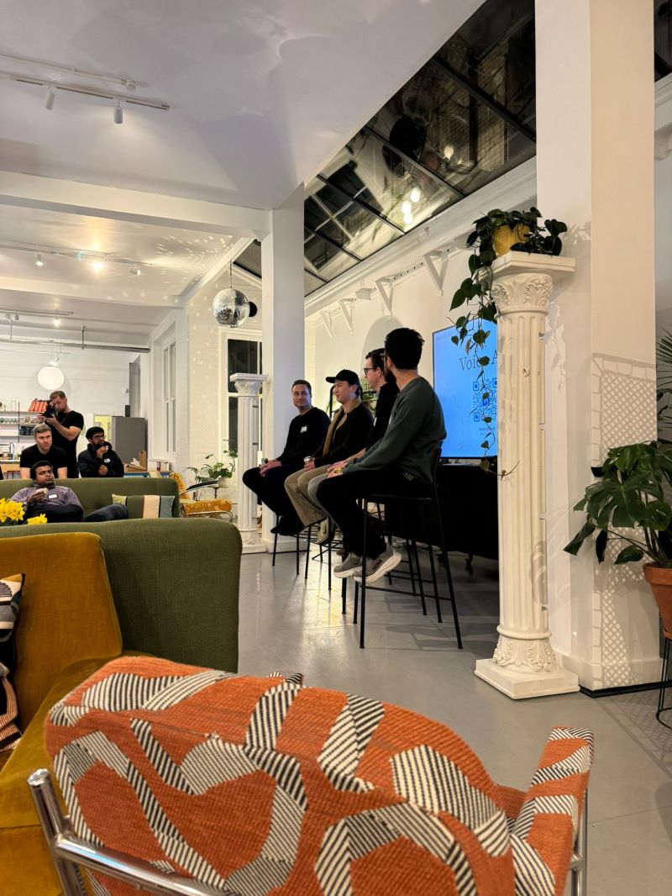
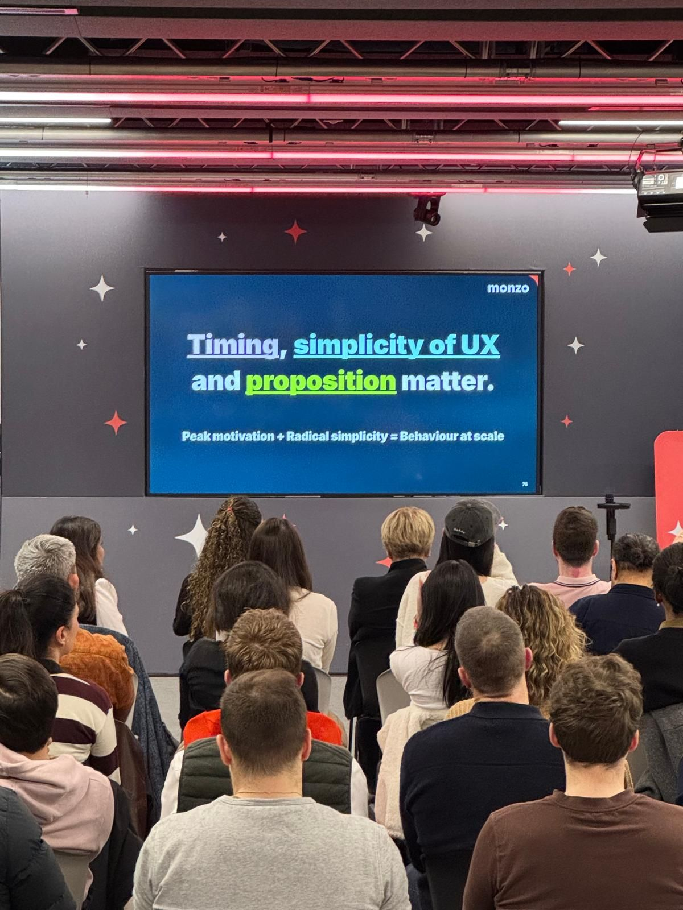
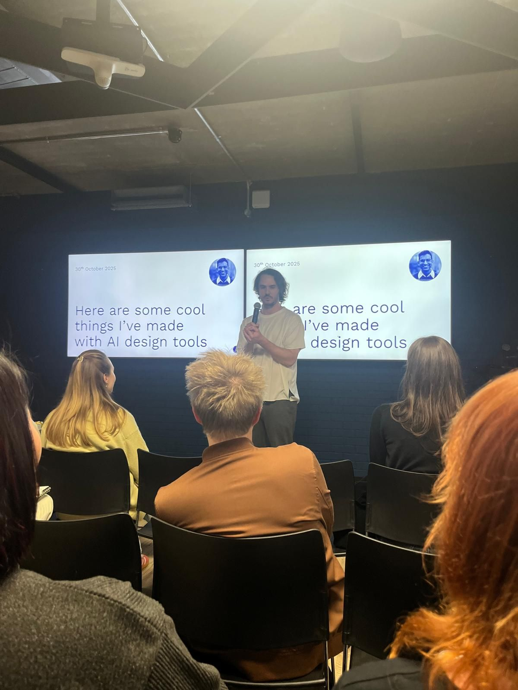
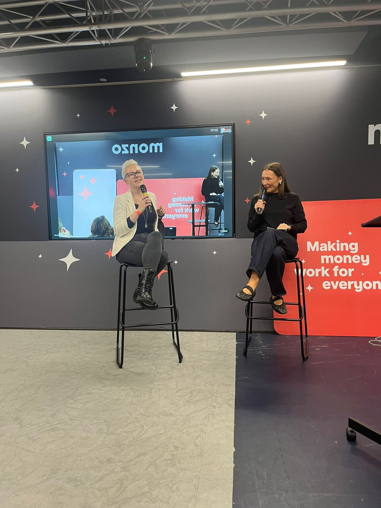
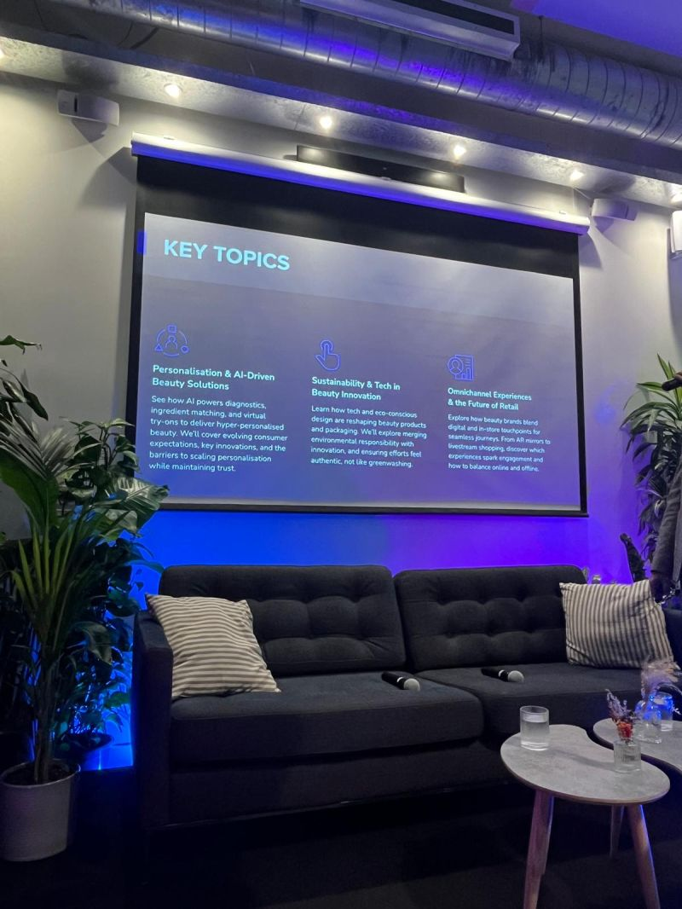

Senior Product Designer with 10+ years' experience crafting intuitive digital products.
Currently at Healf, I connect e-commerce and healthtech, designing commercially effective experiences across purchase, onboarding, and growth journeys.
I balance innovation with usability and refined UI, and continuously experiment with emerging technologies and AI tools to enhance speed, execution, and creative exploration.
I stay connected to the industry through London's design and tech community, regularly attending events and meetups. If you know of any great ones coming up, I'd love to hear about them. See you there. For the full list see my posts on LinkedIn.

AI Voice - AssemblyAI x Granola. Key takeaways: Customers care about quality of documentation over speed of transcription. Tonality and emotion is a key unlock for better context. Adoption for always-on voice recording wearables will be at a societal level. Flemish is tricky.
Voice isn't my main domain, but as AI becomes more deeply woven into our daily lives and workflows, voice interfaces will inevitably become an even bigger part of more user journeys - and in many cases, a helpful tool to solve problems.
It was great to get a glimpse of what's happening under the hood, and the complexities involved. Great event hosted at the Granola offices - lovely to meet lots of new faces.

Key takeaways: Timing, simplicity of UX and proposition matter. Lean on behavioural models. Ship early and often.
It's not my first time attending Monzo product events. There is a reason I mark the date in the diary (and also rope colleagues into attending too). Their product design thinking is best in class and their case studies are insightful and inspiring. They balance commercial goals whilst being customer centric, they are unafraid to tread new ground in the finance sphere and they also like to add, in their words, 'monzo magic' to make finance more fun.
Last night was no exception as they guided us through making pensions accessible and tax easier - plus my personal favourite, the deep dive into their staggeringly successful 1p challenge.
If you are in product (or not!) I highly recommend attending these - see you at the next one Monzo Bank. Also nice to see PD Ladies as always.

Can't deny last night was one of my favourite talks of the year. Both aspirational and achievable, the presenters demo'd future forward processes and tools with no mystery or vagueness. Step by step practical use cases designing and building cool things.
Thank you INTERFACE for putting together a great event and Checkout.com for hosting.
I fan-girled over Paavan Buddhdev after realising he designed londondesignevents.com. He gave great insights into his vibe coding and use of AI in both his work and personal pursuits.
Kevin H. gave an incredible breakdown of AI onboarding and the importance of getting a team with a varied AI skillset to a shared baseline.
James Finlay of Myth Studio gave one of the coolest talks of the year so far. A step by step of how to create a full AI motion sequence. Whilst not my world or part of my day to day, it was so inspiring to watch a passionate creative create with AI tools I didn't even know existed.

Back at Monzo Bank last night for another insightful night of behind the scenes product design at Monzo.
Clara Clements Dalbera walked us through the solution of utilising streaks to offer credit to customers who might normally have fallen through the net.
Elsa Corcione spoke about designing for trust, not just simplicity, when Monzo introduced their first insurance product.
And an open discussion with Lily Dart and Natalie Waller about I&D and how to be a leader of designers.

Technology, sustainability, and evolving consumer expectations are redefining the future of the beauty industry.
Beauty Pie's Max Fumagalli and Deciem's Anne-Claire Ahouangonou gave lots of insights and guided us through topics such as AI-driven personalisation, environmentally conscious consumers and the importance of omni-channel experiences at BrainStation last night.